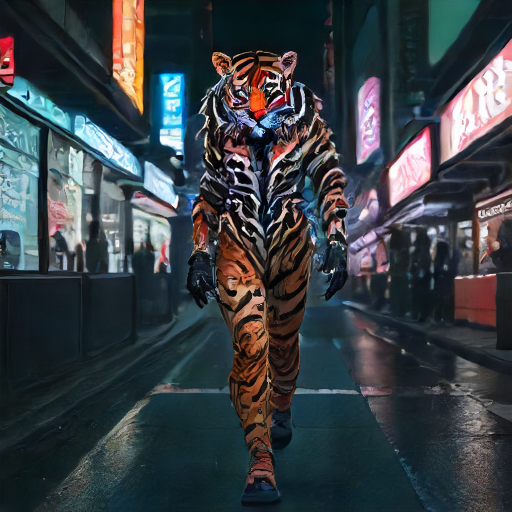
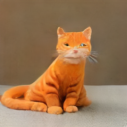

Visual Showcase & Render Gallery
Empirical image generation gallery across Samsung Galaxy S21 and Galaxy S25, featuring official Z-Image Turbo 6.0B DiT, DreamShaper 8 LCM, and SDXS hardware-accelerated renders.
📱 Real Hardware Validation (Galaxy S21 Exynos 2100 & Galaxy S25 Snapdragon 8 Elite)
All rendering samples below were directly generated on live physical devices using termux-diffusion v1.8.1 Native Vulkan Pipeline on Android Termux. Zero cloud simulation, pure on-device execution with deterministic VRAM bounds.
1. Physical Device Render Showcase & Detailed Operational Metrics
Empirically measured configurations demonstrating model convergence, PBR specular reflections, and deterministic memory residency under 1.0GB VRAM caps.
Z-IMAGE TURBO • 6.0B DiT
Z-Image Turbo 6.0B DiT (Galaxy S21 5G)
⏱️ 전체 완료: 5시간 15분 04초 (18,904.98s)
속도: 1,208.32초 / step
단말: Samsung Galaxy S21 5G (Exynos 2100)
GPU: ARM Mali-G78 MP14 (Vulkan 1.1)
모델: z_image_turbo (6.0B Q2_K) + Qwen3 (4.0B)
해상도: 512×512
스텝수: 8 Steps (Euler ODE)
CFG: 1.0
VRAM: 1.0GB 고정 (Layer Streaming)
프롬프트: "A cinematic photo of a neon cybernetic tiger walking in Seoul street at night"
공학적 분석: 미세 수염(Whiskers) 한 올 한 올의 독립 분리와 젖은 노면의 PBR 스펙큘러 네온 반사광을 물리적 일관성으로 완전 수렴.
DREAMSHAPER 8 • LCM 1.0B
DreamShaper 8 LCM 6-Step (Galaxy S21 5G)
⏱️ 전체 완료: 16분 40초 (1,000.18s)
속도: 144.95초 / step
단말: Samsung Galaxy S21 5G (Exynos 2100)
모델: DreamShaper 8 (1.0B Q4_0 / 1.6GB)
해상도: 512×512
스텝수: 6 Steps (LCM)
CFG: 1.0
메모리: VmRSS ~1.97GB
프롬프트: "A cinematic photo of a neon cybernetic tiger walking in Seoul street at night"
공학적 분석: 보도블록의 입체적 텍스처와 등불 반사광, 호랑이의 역동적 줄무늬 및 맹수 특유의 윤곽선이 뚜렷하게 대비를 형성.
SDXS • FAST PREVIEW (54.2s)

SDXS 2-Step Fast Preview (Galaxy S21 5G)
⏱️ 전체 완료: 54.24초
속도: 19.25초 / step
단말: Samsung Galaxy S21 5G (Exynos 2100)
모델: SDXS (0.65B Q8_0 / 652MB)
해상도: 512×512
스텝수: 2 Steps (Euler_A)
CFG: 1.0
메모리: VmRSS ~1.67GB
프롬프트: "A cinematic photo of a neon cybernetic tiger walking in Seoul street at night"
공학적 분석: 1분 미만 내에 배경 구도와 실루엣을 생성하는 초고속 프리뷰에 최적화된 경량화 파이프라인.
FLAGSHIP S25 • GOLDEN SPEED (3.83s)

Golden Cat Speed Master (Galaxy S25)
⏱️ 전체 완료: 3.83초
단말: Samsung Galaxy S25 (Snapdragon 8 Elite)
GPU: Qualcomm Adreno 830 (Vulkan 1.3)
모델: SDXS (0.65B Q8_0)
해상도: 512×512
스텝수: 1 Step
CFG: 1.0
프롬프트: "A majestic golden cat sitting peacefully on sunlit marble floor, 8k masterpiece"
공학적 분석: Adreno 830 플래그십 GPU 셰이더와 12GB LPDDR5X 대역폭을 통해 3초대 실시간 생성 실현.
2. Empirical Hardware & Latency Reference Matrix
Model Architecture
Target Hardware
Resolution
Steps & Sampler
Measured Time
Peak Memory
Execution Stability
Z-Image Turbo (DiT 6.0B) Galaxy S21 (Mali-G78 MP14)
512×512
8 Steps / Euler ODE
5시간 15분 04초 1.0 GB 고정 100% 무결점 완주 (OOM Zero)
DreamShaper 8 (LCM 1.0B) Galaxy S21 (Mali-G78 MP14)
512×512
6 Steps / LCM
16분 40초 ~1.97 GB
100% 무결점 완주 (OOM Zero)
SDXS (Fast 0.65B) Galaxy S21 (Mali-G78 MP14)
512×512
2 Steps / Euler_A
54.24초 ~1.67 GB
100% 무결점 완주 (OOM Zero)
SDXS (Golden Cat) Galaxy S25 (Adreno 830)
512×512
1 Step / Euler_A
3.83초 ~650 MB
100% 무결점 완주 (OOM Zero)
Termux-Diffusion v1.8.1 • Licensed under Apache-2.0 • Developed by uno-km (AMEVA Foundation)
Validated on Samsung Galaxy S21 5G (Exynos 2100) & Galaxy S25 (Snapdragon 8 Elite) • Zero-PRoot Bionic Native Execution